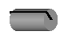
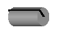
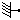
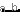
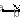
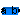
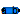
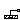
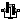

Rigid components such as bodies with mass and inertia and massless rods
Package Parts contains rigid components of a multi-body system. These components may be used to build up more complicated structures. For example, a part may be built up of a "Body" and of several "FixedTranslation" components.
| Model | Description |
|---|---|
| Fixed | Frame fixed in world frame at a given position.
It is visualized with a shape, see shapeType below
(the frames on the two
sides do not belong to the component):
|
| FixedTranslation | Fixed translation of frame_b with respect to frame_a.
It is visualized with a shape, see shapeType below
(the frames on the two sides do not belong to the component):
|
| FixedRotation | Fixed translation and fixed rotation of frame_b with respect to frame_a
It is visualized with a shape, see shapeType below
(the frames on the two sides do not belong to the component):
|
| Body | Rigid body with mass, inertia tensor and one frame connector.
It is visualized with a cylinder and a sphere at the
center of mass:
|
| BodyShape | Rigid body with mass, inertia tensor, different shapes
(see shapeType below)
for animation, and two frame connectors:
|
| Fixed BodyBox | Rigid body with box shape (mass and animation properties are computed
from box data and from density):
|
| BodyCylinder | Rigid body with cylinder shape (mass and animation properties
are computed from cylinder data and from density):
|
| PointMass | Rigid body where inertia tensor and rotation is neglected:
|
| Mounting1D | Propagate 1-dim. support torque to 3-dim. system |
| Rotor1D | 1D inertia attachable on 3-dim. bodies (without neglecting dynamic effects)  |
| BevelGear1D | 1D gearbox with arbitrary shaft directions (3D bearing frame) |
Components Fixed, FixedTranslation, FixedRotation
and BodyShape are visualized according to parameter
shapeType, that may have the following values (e.g., shapeType = "box"):

All the details of the visualization shape parameters are given in Visualizers.FixedShape
Colors in all animation parts are defined via parameter color. This is an Integer vector with 3 elements, {r, g, b}, and specifies the color of the shape. {r,g,b} are the "red", "green" and "blue" color parts, given in the ranges 0 .. 255, respectively. The predefined type MultiBody.Types.Color contains a menu definition of the colors used in the MultiBody library (this will be replaced by a color editor).
Extends from Modelica.Icons.Package (Icon for standard packages).
| Name | Description |
|---|---|
|  Fixed | Frame fixed in the world frame at a given position |
|  FixedTranslation | Fixed translation of frame_b with respect to frame_a |
|  FixedRotation | Fixed translation followed by a fixed rotation of frame_b with respect to frame_a |
| Body | Rigid body with mass, inertia tensor and one frame connector (12 potential states) |
| BodyShape | Rigid body with mass, inertia tensor, different shapes for animation, and two frame connectors (12 potential states) |
|  BodyBox | Rigid body with box shape. Mass and animation properties are computed from box data and density (12 potential states) |
|  BodyCylinder | Rigid body with cylinder shape. Mass and animation properties are computed from cylinder data and density (12 potential states) |
| PointMass | Rigid body where body rotation and inertia tensor is neglected (6 potential states) |
|  Mounting1D | Propagate 1-dim. support torque to 3-dim. system (provided world.driveTrainMechanics3D=true) |
| Rotor1D | 1D inertia attachable on 3-dim. bodies (3D dynamic effects are taken into account if world.driveTrainMechanics3D=true) |
|  BevelGear1D | 1D gearbox with arbitrary shaft directions and 3-dim. bearing frame (3D dynamic effects are taken into account provided world.driveTrainMechanics3D=true) |
| RollingWheel | Ideal rolling wheel on flat surface z=0 (5 positional, 3 velocity degrees of freedom) |
| RollingWheelSet | Ideal rolling wheel set consisting of two ideal rolling wheels connected together by an axis |
Frame fixed in the world frame at a given position
Element consisting of a frame (frame_b) that is fixed in the world frame at a given position defined by parameter vector r (vector from origin of world frame to frame_b, resolved in the world frame).
By default, this component is visualized by a cylinder connecting the world frame and frame_b of this components, as shown in the figure below. Note, that the visualized world frame on the left side and Fixed.frame_b on the right side are not part of the component animation and that the animation may be switched off via parameter animation = false.
| Name | Description |
|---|---|
| animation | = true, if animation shall be enabled |
| r[3] | Position vector from world frame to frame_b, resolved in world frame [m] |
| Animation | |
| if animation = true | |
| shapeType | Type of shape |
| r_shape[3] | Vector from world frame to shape origin, resolved in world frame [m] |
| lengthDirection | Vector in length direction of shape, resolved in world frame [1] |
| widthDirection | Vector in width direction of shape, resolved in world frame [1] |
| length | Length of shape [m] |
| width | Width of shape [m] |
| height | Height of shape [m] |
| extra | Additional parameter for cone, pipe etc. (see docu of Visualizers.Advanced.Shape) |
| color | Color of shape |
| specularCoefficient | Reflection of ambient light (= 0: light is completely absorbed) |
| Name | Description |
|---|---|
| frame_b | Coordinate system fixed in the world frame |
Fixed translation of frame_b with respect to frame_a
Component for a fixed translation of frame_b with respect to frame_a, i.e., the relationship between connectors frame_a and frame_b remains constant and frame_a is always parallel to frame_b.
By default, this component is visualized by a cylinder connecting frame_a and frame_b, as shown in the figure below. Note, that the two visualized frames are not part of the component animation and that the animation may be switched off via parameter animation = false.
| Name | Description |
|---|---|
| animation | = true, if animation shall be enabled |
| r[3] | Vector from frame_a to frame_b resolved in frame_a [m] |
| Animation | |
| if animation = true | |
| shapeType | Type of shape |
| r_shape[3] | Vector from frame_a to shape origin, resolved in frame_a [m] |
| lengthDirection | Vector in length direction of shape, resolved in frame_a [1] |
| widthDirection | Vector in width direction of shape, resolved in frame_a [1] |
| length | Length of shape [m] |
| width | Width of shape [m] |
| height | Height of shape [m] |
| extra | Additional parameter depending on shapeType (see docu of Visualizers.Advanced.Shape) |
| color | Color of shape |
| specularCoefficient | Reflection of ambient light (= 0: light is completely absorbed) |
| Name | Description |
|---|---|
| frame_a | Coordinate system fixed to the component with one cut-force and cut-torque |
| frame_b | Coordinate system fixed to the component with one cut-force and cut-torque |
Fixed translation followed by a fixed rotation of frame_b with respect to frame_a
Component for a fixed translation and fixed rotation of frame_b with respect to frame_a, i.e., the relationship between connectors frame_a and frame_b remains constant. There are several possibilities to define the orientation of frame_b with respect to frame_a:
By default, this component is visualized by a cylinder connecting frame_a and frame_b, as shown in the figure below. In this figure frame_b is rotated along the z-axis of frame_a with 60 degree. Note, that the two visualized frames are not part of the component animation and that the animation may be switched off via parameter animation = false.
| Name | Description |
|---|---|
| animation | = true, if animation shall be enabled |
| r[3] | Vector from frame_a to frame_b resolved in frame_a [m] |
| rotationType | Type of rotation description |
| if rotationType = RotationAxis | |
| n | Axis of rotation in frame_a (= same as in frame_b) [1] |
| angle | Angle to rotate frame_a around axis n into frame_b [deg] |
| if rotationType = TwoAxesVectors | |
| n_x | Vector along x-axis of frame_b resolved in frame_a [1] |
| n_y | Vector along y-axis of frame_b resolved in frame_a [1] |
| if rotationType = PlanarRotationSequence | |
| sequence | Sequence of rotations |
| angles[3] | Rotation angles around the axes defined in 'sequence' [deg] |
| Animation | |
| if animation = true | |
| shapeType | Type of shape |
| r_shape[3] | Vector from frame_a to shape origin, resolved in frame_a [m] |
| lengthDirection | Vector in length direction of shape, resolved in frame_a [1] |
| widthDirection | Vector in width direction of shape, resolved in frame_a [1] |
| length | Length of shape [m] |
| width | Width of shape [m] |
| height | Height of shape [m] |
| extra | Additional parameter depending on shapeType (see docu of Visualizers.Advanced.Shape) |
| color | Color of shape |
| specularCoefficient | Reflection of ambient light (= 0: light is completely absorbed) |
| Name | Description |
|---|---|
| frame_a | Coordinate system fixed to the component with one cut-force and cut-torque |
| frame_b | Coordinate system fixed to the component with one cut-force and cut-torque |
Rigid body with mass, inertia tensor and one frame connector (12 potential states)
Rigid body with mass and inertia tensor. All parameter vectors have to be resolved in frame_a. The inertia tensor has to be defined with respect to a coordinate system that is parallel to frame_a with the origin at the center of mass of the body.
By default, this component is visualized by a cylinder located between frame_a and the center of mass and by a sphere that has its center at the center of mass. If the cylinder length is smaller as the radius of the sphere, e.g., since frame_a is located at the center of mass, the cylinder is not displayed. Note, that the animation may be switched off via parameter animation = false.
States of Body Components
Every body has potential states. If possible a tool will select the states of joints and not the states of bodies because this is usually the most efficient choice. In this case the position, orientation, velocity and angular velocity of frame_a of the body will be computed by the component that is connected to frame_a. However, if a body is moving freely in space, variables of the body have to be used as states. The potential states of the body are:
The quaternions have the slight disadvantage that there is a non-linear constraint equation between the 4 quaternions. Therefore, at least one non-linear equation has to be solved during simulation. A tool might, however, analytically solve this simple constraint equation. Using the 3 angles as states has the disadvantage that there is a singular configuration in which a division by zero will occur. If it is possible to determine in advance for an application class that this singular configuration is outside of the operating region, the 3 angles might be used as potential states by setting useQuaternions = false.
In text books about 3-dimensional mechanics often 3 angles and the angular velocity are used as states. This is not the case here, since 3 angles and their derivatives are used as potential states (if useQuaternions = false). The reason is that for real-time simulation the discretization formula of the integrator might be "inlined" and solved together with the body equations. By appropriate symbolic transformation the performance is drastically increased if angles and their derivatives are used as states, instead of angles and the angular velocity.
Whether or not variables of the body are used as states is usually automatically selected by the Modelica translator. If parameter enforceStates is set to true in the "Advanced" menu, then body variables are forced to be used as states according to the setting of parameters "useQuaternions" and "sequence_angleStates".
| Name | Description |
|---|---|
| animation | = true, if animation shall be enabled (show cylinder and sphere) |
| r_CM[3] | Vector from frame_a to center of mass, resolved in frame_a [m] |
| m | Mass of rigid body [kg] |
| Inertia tensor (resolved in center of mass, parallel to frame_a) | |
| I_11 | (1,1) element of inertia tensor [kg.m2] |
| I_22 | (2,2) element of inertia tensor [kg.m2] |
| I_33 | (3,3) element of inertia tensor [kg.m2] |
| I_21 | (2,1) element of inertia tensor [kg.m2] |
| I_31 | (3,1) element of inertia tensor [kg.m2] |
| I_32 | (3,2) element of inertia tensor [kg.m2] |
| Initialization | |
| r_0[3] | Position vector from origin of world frame to origin of frame_a [m] |
| v_0[3] | Absolute velocity of frame_a, resolved in world frame (= der(r_0)) [m/s] |
| a_0[3] | Absolute acceleration of frame_a resolved in world frame (= der(v_0)) [m/s2] |
| angles_fixed | = true, if angles_start are used as initial values, else as guess values |
| angles_start[3] | Initial values of angles to rotate frame_a around 'sequence_start' axes into frame_b [rad] |
| sequence_start | Sequence of rotations to rotate frame_a into frame_b at initial time |
| w_0_fixed | = true, if w_0_start are used as initial values, else as guess values |
| w_0_start[3] | Initial or guess values of angular velocity of frame_a resolved in world frame [rad/s] |
| z_0_fixed | = true, if z_0_start are used as initial values, else as guess values |
| z_0_start[3] | Initial values of angular acceleration z_0 = der(w_0) [rad/s2] |
| Animation | |
| if animation = true | |
| sphereDiameter | Diameter of sphere [m] |
| sphereColor | Color of sphere |
| cylinderDiameter | Diameter of cylinder [m] |
| cylinderColor | Color of cylinder |
| specularCoefficient | Reflection of ambient light (= 0: light is completely absorbed) |
| Advanced | |
| enforceStates | = true, if absolute variables of body object shall be used as states (StateSelect.always) |
| useQuaternions | = true, if quaternions shall be used as potential states otherwise use 3 angles as potential states |
| sequence_angleStates | Sequence of rotations to rotate world frame into frame_a around the 3 angles used as potential states |
| Name | Description |
|---|---|
| frame_a | Coordinate system fixed at body |
Rigid body with mass, inertia tensor, different shapes for animation, and two frame connectors (12 potential states)
Rigid body with mass and inertia tensor and two frame connectors. All parameter vectors have to be resolved in frame_a. The inertia tensor has to be defined with respect to a coordinate system that is parallel to frame_a with the origin at the center of mass of the body. The coordinate system frame_b is always parallel to frame_a.
By default, this component is visualized by any shape that can be defined with Modelica.Mechanics.MultiBody.Visualizers.FixedShape. This shape is placed between frame_a and frame_b (default: length(shape) = Frames.length(r)). Additionally a sphere may be visualized that has its center at the center of mass. Note, that the animation may be switched off via parameter animation = false.
The following shapes can be defined via parameter shapeType, e.g., shapeType="cone":
A BodyShape component has potential states. For details of these states and of the "Advanced" menu parameters, see model MultiBody.Parts.Body.
| Name | Description |
|---|---|
| animation | = true, if animation shall be enabled (show shape between frame_a and frame_b and optionally a sphere at the center of mass) |
| animateSphere | = true, if mass shall be animated as sphere provided animation=true |
| r[3] | Vector from frame_a to frame_b resolved in frame_a [m] |
| r_CM[3] | Vector from frame_a to center of mass, resolved in frame_a [m] |
| m | Mass of rigid body [kg] |
| Inertia tensor (resolved in center of mass, parallel to frame_a) | |
| I_11 | (1,1) element of inertia tensor [kg.m2] |
| I_22 | (2,2) element of inertia tensor [kg.m2] |
| I_33 | (3,3) element of inertia tensor [kg.m2] |
| I_21 | (2,1) element of inertia tensor [kg.m2] |
| I_31 | (3,1) element of inertia tensor [kg.m2] |
| I_32 | (3,2) element of inertia tensor [kg.m2] |
| Initialization | |
| r_0[3] | Position vector from origin of world frame to origin of frame_a [m] |
| v_0[3] | Absolute velocity of frame_a, resolved in world frame (= der(r_0)) [m/s] |
| a_0[3] | Absolute acceleration of frame_a resolved in world frame (= der(v_0)) [m/s2] |
| angles_fixed | = true, if angles_start are used as initial values, else as guess values |
| angles_start[3] | Initial values of angles to rotate frame_a around 'sequence_start' axes into frame_b [rad] |
| sequence_start | Sequence of rotations to rotate frame_a into frame_b at initial time |
| w_0_fixed | = true, if w_0_start are used as initial values, else as guess values |
| w_0_start[3] | Initial or guess values of angular velocity of frame_a resolved in world frame [rad/s] |
| z_0_fixed | = true, if z_0_start are used as initial values, else as guess values |
| z_0_start[3] | Initial values of angular acceleration z_0 = der(w_0) [rad/s2] |
| Animation | |
| if animation = true | |
| shapeType | Type of shape |
| r_shape[3] | Vector from frame_a to shape origin, resolved in frame_a [m] |
| lengthDirection | Vector in length direction of shape, resolved in frame_a [1] |
| widthDirection | Vector in width direction of shape, resolved in frame_a [1] |
| length | Length of shape [m] |
| width | Width of shape [m] |
| height | Height of shape [m] |
| extra | Additional parameter depending on shapeType (see docu of Visualizers.Advanced.Shape) |
| color | Color of shape |
| specularCoefficient | Reflection of ambient light (= 0: light is completely absorbed) |
| if animation = true and animateSphere = true | |
| sphereDiameter | Diameter of sphere [m] |
| sphereColor | Color of sphere of mass |
| Advanced | |
| enforceStates | = true, if absolute variables of body object shall be used as states (StateSelect.always) |
| useQuaternions | = true, if quaternions shall be used as potential states otherwise use 3 angles as potential states |
| sequence_angleStates | Sequence of rotations to rotate world frame into frame_a around the 3 angles used as potential states |
| Name | Description |
|---|---|
| frame_a | Coordinate system fixed to the component with one cut-force and cut-torque |
| frame_b | Coordinate system fixed to the component with one cut-force and cut-torque |
Rigid body with box shape. Mass and animation properties are computed from box data and density (12 potential states)
Rigid body with box shape. The mass properties of the body (mass, center of mass, inertia tensor) are computed from the box data. Optionally, the box may be hollow. The (outer) box shape is by default used in the animation. The hollow part is not shown in the animation. The two connector frames frame_a and frame_b are always parallel to each other. Example of component animation (note, that the animation may be switched off via parameter animation = false):
A BodyBox component has potential states. For details of these states and of the "Advanced" menu parameters, see model MultiBody.Parts.Body.
| Name | Description |
|---|---|
| animation | = true, if animation shall be enabled (show box between frame_a and frame_b) |
| r[3] | Vector from frame_a to frame_b resolved in frame_a [m] |
| r_shape[3] | Vector from frame_a to box origin, resolved in frame_a [m] |
| lengthDirection | Vector in length direction of box, resolved in frame_a [1] |
| widthDirection | Vector in width direction of box, resolved in frame_a [1] |
| length | Length of box [m] |
| width | Width of box [m] |
| height | Height of box [m] |
| innerWidth | Width of inner box surface (0 <= innerWidth <= width) [m] |
| innerHeight | Height of inner box surface (0 <= innerHeight <= height) [m] |
| density | Density of cylinder (e.g., steel: 7700 .. 7900, wood : 400 .. 800) [kg/m3] |
| color | Color of box |
| specularCoefficient | Reflection of ambient light (= 0: light is completely absorbed) |
| Initialization | |
| r_0[3] | Position vector from origin of world frame to origin of frame_a [m] |
| v_0[3] | Absolute velocity of frame_a, resolved in world frame (= der(r_0)) [m/s] |
| a_0[3] | Absolute acceleration of frame_a resolved in world frame (= der(v_0)) [m/s2] |
| angles_fixed | = true, if angles_start are used as initial values, else as guess values |
| angles_start[3] | Initial values of angles to rotate frame_a around 'sequence_start' axes into frame_b [rad] |
| sequence_start | Sequence of rotations to rotate frame_a into frame_b at initial time |
| w_0_fixed | = true, if w_0_start are used as initial values, else as guess values |
| w_0_start[3] | Initial or guess values of angular velocity of frame_a resolved in world frame [rad/s] |
| z_0_fixed | = true, if z_0_start are used as initial values, else as guess values |
| z_0_start[3] | Initial values of angular acceleration z_0 = der(w_0) [rad/s2] |
| Advanced | |
| enforceStates | = true, if absolute variables of body object shall be used as states (StateSelect.always) |
| useQuaternions | = true, if quaternions shall be used as potential states otherwise use 3 angles as potential states |
| sequence_angleStates | Sequence of rotations to rotate world frame into frame_a around the 3 angles used as potential states |
| Name | Description |
|---|---|
| frame_a | Coordinate system fixed to the component with one cut-force and cut-torque |
| frame_b | Coordinate system fixed to the component with one cut-force and cut-torque |
Rigid body with cylinder shape. Mass and animation properties are computed from cylinder data and density (12 potential states)
Rigid body with cylinder shape. The mass properties of the body (mass, center of mass, inertia tensor) are computed from the cylinder data. Optionally, the cylinder may be hollow. The cylinder shape is by default used in the animation. The two connector frames frame_a and frame_b are always parallel to each other. Example of component animation (note, that the animation may be switched off via parameter animation = false):
A BodyCylinder component has potential states. For details of these states and of the "Advanced" menu parameters, see model MultiBody.Parts.Body.
| Name | Description |
|---|---|
| animation | = true, if animation shall be enabled (show cylinder between frame_a and frame_b) |
| r[3] | Vector from frame_a to frame_b, resolved in frame_a [m] |
| r_shape[3] | Vector from frame_a to cylinder origin, resolved in frame_a [m] |
| lengthDirection | Vector in length direction of cylinder, resolved in frame_a [1] |
| length | Length of cylinder [m] |
| diameter | Diameter of cylinder [m] |
| innerDiameter | Inner diameter of cylinder (0 <= innerDiameter <= Diameter) [m] |
| density | Density of cylinder (e.g., steel: 7700 .. 7900, wood : 400 .. 800) [kg/m3] |
| color | Color of cylinder |
| specularCoefficient | Reflection of ambient light (= 0: light is completely absorbed) |
| Initialization | |
| r_0[3] | Position vector from origin of world frame to origin of frame_a [m] |
| v_0[3] | Absolute velocity of frame_a, resolved in world frame (= der(r_0)) [m/s] |
| a_0[3] | Absolute acceleration of frame_a resolved in world frame (= der(v_0)) [m/s2] |
| angles_fixed | = true, if angles_start are used as initial values, else as guess values |
| angles_start[3] | Initial values of angles to rotate frame_a around 'sequence_start' axes into frame_b [rad] |
| sequence_start | Sequence of rotations to rotate frame_a into frame_b at initial time |
| w_0_fixed | = true, if w_0_start are used as initial values, else as guess values |
| w_0_start[3] | Initial or guess values of angular velocity of frame_a resolved in world frame [rad/s] |
| z_0_fixed | = true, if z_0_start are used as initial values, else as guess values |
| z_0_start[3] | Initial values of angular acceleration z_0 = der(w_0) [rad/s2] |
| Advanced | |
| enforceStates | = true, if absolute variables of body object shall be used as states (StateSelect.always) |
| useQuaternions | = true, if quaternions shall be used as potential states otherwise use 3 angles as potential states |
| sequence_angleStates | Sequence of rotations to rotate world frame into frame_a around the 3 angles used as potential states |
| Name | Description |
|---|---|
| frame_a | Coordinate system fixed to the component with one cut-force and cut-torque |
| frame_b | Coordinate system fixed to the component with one cut-force and cut-torque |
Rigid body where body rotation and inertia tensor is neglected (6 potential states)
Rigid body where the inertia tensor is neglected. This body is solely defined by its mass. By default, this component is visualized by a sphere that has its center at frame_a. Note, that the animation may be switched off via parameter animation = false.
Every PointMass has potential states. If possible a tool will select the states of joints and not the states of PointMass because this is usually the most efficient choice. In this case the position and velocity of frame_a of the body will be computed by the component that is connected to frame_a. However, if a PointMass is moving freely in space, variables of the PointMass have to be used as states. The potential states are: The position vector frame_a.r_0 from the origin of the world frame to the origin of frame_a of the body, resolved in the world frame and the absolute velocity v_0 of the origin of frame_a, resolved in the world frame (= der(frame_a.r_0)).
Whether or not variables of the body are used as states is usually automatically selected by the Modelica translator. If parameter enforceStates is set to true in the "Advanced" menu, then PointMass variables frame_a.r_0 and der(frame_a.r_0) are forced to be used as states.
| Name | Description |
|---|---|
| animation | = true, if animation shall be enabled (show sphere) |
| m | Mass of mass point [kg] |
| Initialization | |
| r_0[3] | Position vector from origin of world frame to origin of frame_a, resolved in world frame [m] |
| v_0[3] | Absolute velocity of frame_a, resolved in world frame (= der(r_0)) [m/s] |
| a_0[3] | Absolute acceleration of frame_a resolved in world frame (= der(v_0)) [m/s2] |
| Animation | |
| if animation = true | |
| sphereDiameter | Diameter of sphere [m] |
| sphereColor | Color of sphere |
| specularCoefficient | Reflection of ambient light (= 0: light is completely absorbed) |
| Advanced | |
| stateSelect | Priority to use frame_a.r_0, v_0 (= der(frame_a.r_0)) as states |
| Name | Description |
|---|---|
| frame_a | Coordinate system fixed at center of mass point |
Propagate 1-dim. support torque to 3-dim. system (provided world.driveTrainMechanics3D=true)
This component is used to acquire support torques from a 1-dim.-rotational mechanical system (e.g., components from Modelica.Mechanics.Rotational) and to propagate them to a carrier body.
The 1-dim. support torque at flange_b is transformed into 3-dim. space under
consideration of the rotation axis, parameter n, which has to be given in the
local coordinate system of frame_a.
All components of a 1-dim.-rotational mechanical system that are connected to a common
Mounting1D element need to have the same axis of rotation
along parameter vector n. This means that, e.g., bevel
gears where the axis of rotation of flange_a and
flange_b are different cannot be described properly by
connecting to the Mounting1D component. In this case, a combination of several
Mounting1D components or the component BevelGear1D should be used.
Reference
Schweiger, Christian ;
Otter, Martin:
Modelling
3D Mechanical Effects of 1-dim. Powertrains. In: Proceedings of the 3rd International
Modelica Conference. Linköping : The Modelica Association and Linköping University,
November 3-4, 2003, pp. 149-158
| Name | Description |
|---|---|
| phi0 | Fixed offset angle of housing [rad] |
| n | Axis of rotation = axis of support torque (resolved in frame_a) [1] |
| Name | Description |
|---|---|
| flange_b | (right) flange fixed in housing |
| frame_a | Frame in which housing is fixed (connector is removed, if world.driveTrainMechanics3D=false) |
1D inertia attachable on 3-dim. bodies (3D dynamic effects are taken into account if world.driveTrainMechanics3D=true)
This component is used to model the gyroscopic torques exerted by a 1-dim.
inertia (so called rotor) on its 3-dim. carrier body. Gyroscopic torques
appear, if the vector of the carrier body's angular velocity is not parallel
to the vector of the rotor's axis. The axis of rotation of the rotor is defined by
the parameter n, which has to be given in the local coordinate system
of frame_a. The default animation of this component is
shown in the figure below.
This component is a replacement for Modelica.Mechanics.Rotational.Components.Inertia for the case, that a 1-dim.-rotational mechanical system should be attached with a 3-dim. carrier body.
The Boolean parameter exact was introduced due to performance
reasons. If exact is set to false, the influence of the carrier body
motion on the angular velocity of the rotor is neglected. This influence is usually
negligible if the 1-dim.-rotational mechanical system accelerates much faster as the base body (this is,
e.g., the case in vehicle powertrains). The essential advantage is
that an algebraic loop is removed since then there is only an
action on acceleration level from the powertrain to the base body
but not vice versa.
Reference
Schweiger, Christian ;
Otter, Martin:
Modelling
3D Mechanical Effects of 1-dim. Powertrains. In: Proceedings of the 3rd International
Modelica Conference. Linköping : The Modelica Association and Linköping University,
November 3-4, 2003, pp. 149-158
| Name | Description |
|---|---|
| animation | = true, if animation shall be enabled (show rotor as cylinder) |
| J | Moment of inertia of rotor around its axis of rotation [kg.m2] |
| n | Axis of rotation resolved in frame_a [1] |
| Animation | |
| if animation = true | |
| r_center[3] | Position vector from origin of frame_a to center of cylinder [m] |
| cylinderLength | Length of cylinder representing the rotor [m] |
| cylinderDiameter | Diameter of cylinder representing the rotor [m] |
| cylinderColor | Color of cylinder representing the rotor |
| specularCoefficient | Reflection of ambient light (= 0: light is completely absorbed) |
| Advanced | |
| stateSelect | Priority to use rotor angle (phi) and rotor speed (w) as states |
| exact | = true, if exact calculations; false if influence of bearing on rotor acceleration is neglected to avoid an algebraic loop |
| Name | Description |
|---|---|
| flange_a | (left) driving flange (flange axis directed INTO cut plane) |
| flange_b | (right) driven flange (flange axis directed OUT OF cut plane) |
| frame_a | Frame in which rotor housing is fixed (connector is removed, if world.driveTrainMechanics3D=false) |
1D gearbox with arbitrary shaft directions and 3-dim. bearing frame (3D dynamic effects are taken into account provided world.driveTrainMechanics3D=true)
This component is used to model a 1-dim. gearbox
with non-parallel axes (defined by parameters n_a, n_b).
A 3-dim. bearing frame is necessary to reflect the
correct support torque, as the axes of rotation of flange_a and
flange_b and the direction of the support torque vector
are different in general.
Note: The name BevelGear1D is kept only for simplicity. Regardless, this component could be used to model any kind of gearbox with non-parallel axes.
Reference
Schweiger, Christian ;
Otter, Martin:
Modelling
3D Mechanical Effects of 1-dim. Powertrains. In: Proceedings of the 3rd International
Modelica Conference. Linköping : The Modelica Association and Linköping University,
November 3-4, 2003, pp. 149-158
Extends from Modelica.Mechanics.Rotational.Interfaces.PartialTwoFlanges (Partial model for a component with two rotational 1-dim. shaft flanges).
| Name | Description |
|---|---|
| ratio | Gear speed ratio |
| n_a | Axis of rotation of flange_a, resolved in frame_a [1] |
| n_b | Axis of rotation of flange_b, resolved in frame_a [1] |
| Name | Description |
|---|---|
| flange_a | Flange of left shaft |
| flange_b | Flange of right shaft |
| frame_a | Bearing frame |
Ideal rolling wheel on flat surface z=0 (5 positional, 3 velocity degrees of freedom)
| Name | Description |
|---|---|
| animation | = true, if animation of wheel shall be enabled |
| wheelRadius | Radius of wheel [m] |
| wheelMass | Mass of wheel [kg] |
| wheel_I_axis | Inertia along the wheel axis [kg.m2] |
| wheel_I_long | Inertia perpendicular to the wheel axis [kg.m2] |
| stateSelect | Priority to use generalized coordinates as states |
| Initialization | |
| angles[3] | Angles to rotate world-frame in to frame_a around z-, y-, x-axis [rad] |
| der_angles[3] | Derivative of angles [rad/s] |
| Animation | |
| if animation = true | |
| width | Width of wheel [m] |
| hollowFraction | 1.0: Completely hollow, 0.0: rigid cylinder |
| wheelColor | Color of wheel |
| Name | Description |
|---|---|
| frame_a | Frame fixed in wheel center point (y-axis: along wheel axis, z-axis: upwards) |
Ideal rolling wheel set consisting of two ideal rolling wheels connected together by an axis
Two wheels are connected by an axis and can rotate around this axis. The wheels are rolling on the x-y plane. The coordinate system attached to the center of the wheel axis (frameMiddle) is constrained so that it is always parallel to the x-y plane. If all generalized coordinates are zero, frameMiddle is parallel to the world frame.
| Name | Description |
|---|---|
| animation | = true, if animation of wheel set shall be enabled |
| wheelRadius | Radius of one wheel [m] |
| wheelMass | Mass of one wheel [kg] |
| wheel_I_axis | Inertia along one wheel axis [kg.m2] |
| wheel_I_long | Inertia perpendicular to one wheel axis [kg.m2] |
| wheelDistance | Distance between the two wheels [m] |
| stateSelect | Priority to use the generalized coordinates as states |
| Animation | |
| if animation = true | |
| wheelWidth | Width of one wheel [m] |
| hollowFraction | 1.0: Completely hollow, 0.0: rigid cylinder |
| wheelColor | Color of wheels |
| Name | Description |
|---|---|
| frameMiddle | Frame fixed in middle of axis connecting both wheels (y-axis: along wheel axis, z-axis: upwards) |
| frame1 | Frame fixed in center point of left wheel (y-axis: along wheel axis, z-axis: upwards) |
| frame2 | Frame fixed in center point of right wheel (y-axis: along wheel axis, z-axis: upwards) |
| axis1 | 1-dim. rotational flange that drives the left wheel |
| axis2 | 1-dim. rotational flange that drives the right wheel |
| support | Support of 1D axes |